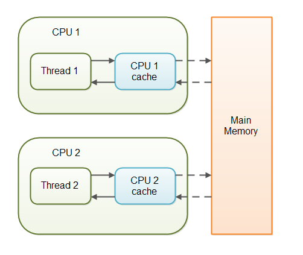
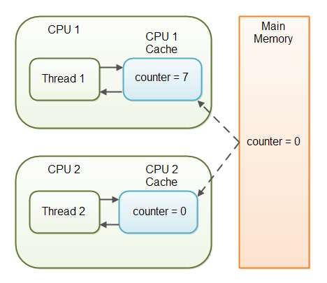

volatile 키워드
1. volatile 키워드란?
volatile 역시 synchronized와 마찬가지로 동기화를 위한 키워드이다.
volatile은 instance의 멤버 필드를 동기화하기 위한 키워드로 JDK 1.4까지 제대로 지원이 안되다가 1.5부터 다시 주목받게 되었다.
volatile 키워드는 변수를 ‘메인 메모리에 저장’ 할것을 명시하는 의미가 있다. 즉, CPU 캐쉬를 사용하지 않고 변수를 메인메모리에 쓰고 메인메모리에서 읽는다.
volatile은 버전의 차이가 있다. Java 5 이후부터는 메인 메모리에서 쓰고 읽는것 이상의 동작을 한다.
2. 왜 volatile 키워드가 필요한가?
멀티프로세서 환경에서 발생할 수 있는 문제와 컴파일러의 최적화 과정에서 발생하는 재배치(reordering) 문제, 그리고 연산의 원자성 문제 때문이다.
2.1. 멀티 프로세서 환경에서의 문제 (가시성 문제)
volatile 키워드가 자바에서 갖는 의미를 잘 이해하려면 가시성(visibility)에 대한 개념을 알아야 하는데 가시성이란 어떤 변수 값을 내가 볼 때 그 변수의 어떤 값을 보느냐의 문제이다.
각 프로세서(CPU)는 성능상의 이유로 CPU의 캐시를 이용하는데 메인메모리의 값을 캐시에 복사하여 읽어들인다.

non-volatile 변수에 대한 작업은 이런 구조때문에 문제가 생길 수 있다.
JVM이 변수를 읽거나 쓸 때 어떤 보장도 하지 않기 때문이다.
public class SharedObject {
public int counter = 0;
}
2개의 Thread가 같은 객체로 counter 변수에 접근한다고 가정하자.
Thread1은 counter 를 증가시키고 Thread1과 Thread2는 때에 따라 counter 변수를 읽는다.
volatile 키워드가 없으면 counter 변수가 언제 CPU캐시에서 메인메모리로 쓰일지 보장할 수 없다. 즉, CPU 캐시의 counter 변수와 메인 메모리의 counter 변수가 다른 값을 가질 수도 있다.

위 그림과 같이 Thread1을 구동한 CPU1은 CPU 캐시에 counter 값을 7로 변경해두었다. 하지만 아직 메인메모리에 저장하지 않은 상태이고 이 때 Thread2를 구동하는 CPU2는 counter 값을 0으로 알고있게된다.
volatile 키워드를 쓰면 이 변수에 대한 쓰기 작업은 즉시 메인 메모리에 이루어질 것이고 읽기 또한 메인메모리에서 읽는다. 따라서 이런 상태 불일치 문제가 생기지 않는다.
2.2. 코드 reordering
컴파일러는 코드 성능 극대화를 위해 작성된 코드 순서를 임의로 재배치한다. 이 재배치 과정은 단일 쓰레드를 가정하기 때문에 다른 쓰레드에 의해 값이 변경되어 쓰레드나 동기화를 제어하는 경우 문제가 될 수 있다.
volatile 키워드를 쓰면 인스턴스의 변수가 여러 쓰레드에 의해 변경될 수 있음을 컴파일러에게 알려줘 이런 reordering에 의한 문제가 발생하지 않도록 한다.
2.3. 연산의 원자성
int와 같은 자료형은 자바에서 32bit이고 이는 32bit 이상의 컴퓨터에서 한번의 메모리연산으로 동작한다. 하지만 long이나 double 처럼 64bit 자료형일 경우 한번의 연산으로 불가능해 여러번 작업이 발생한다.
만약 변수에 volatile 키워드를 붙여주게 되면 이런 변수 값에 대한 할당이 원자성을 가지게 되어 문제가 발생하지 않는다.
(주의) volatile의 한계
아래와 같은 코드는 주의해야 한다. 이는 volatile 키워드가 해결할 수 없다.
volatile int i;
i++;
i++ 는 하나의 동작이 아니라 read i to temp; add temp 1; save temp to i 라는 3개의 문장으로 나눠진다. 따라서 read나 write를 보장하는 volatile은 이렇게 나눠진 3개의 동작에 대한 동기화를 보장할 수 없다. 이런 경우는 synchronized 블럭을 써야 한다.
int i;
synchronized {
i++;
}
좀 더 자세히 설명하자면 처음 i값을 읽을때는 값을 보장하지만 이를 temp에 저장하고 temp에 1을 저장하는 과정을 하는 도중 다른 Thread에서 i값을 변경시킬 수 있다. 이 때 동기화가 깨지는 것이다.
3. 자바 5에서의 volatile
한 Thread가 volatile 변수를 수정할 때 단지 이 변수만 메인 메모리에 저장하는 것이 아니라 이 Thread가 volatile 변수를 수정하기 전에 수정했던 모든 변수들이 모두 메인 메모리에 저장(flush)된다.
그리고 Thread가 volatile 변수를 메인 메모리에서 읽어들일때 volatile 변수를 수정하면서 메인메모리에 flush된 모든 변수들을 메인 메모리로부터 읽어온다.
4. volatile 사용 여부에 따른 동작 정리
-
volatile을 사용하지 않은 변수
최적화가 될 수 있다. 재배치(reordering)이 될 수있고, 실행중 값이 캐쉬에 있을 수 있다. -
volatile을 사용한 변수 (1.5미만)
그 변수 자체에 대해서는 최신의 값이 읽히거나 쓰여진다. -
volatile을 사용한 변수 (1.5이상)
변수 접근까지에 대해 모든 변수들의 상황이 업데이트 되고, 변수가 업데이트된다. -
synchronziation을 사용한 연산
synch블락 전까지의 모든 연산이 업데이트 되고, synch안의 연산이 업데이트된다.
5. volatile을 사용하기 적절한 때는
한 변수를 두고 오직 한 쓰레드만 이 변수에 read/write 작업을 하고 다른 쓰레드들은 read 작업만 하는 경우 volatile 선언이 유효하다.
6. volatile의 성능
volatile 변수의 읽기/쓰기는 메인 메모리를 이용한다. 메인 메모리로부터 데이터를 읽고 쓰는 작업은 CPU 캐시를 이용하는 것 보다 많은 비용이 요구된다. 또한 volatile 선언은 JVM 의 성능 향상을 위한 기술인, 코드 재정리를 막기도 한다. 그러므로 volatile 키워드는 변수의 가시성 보장이 반드시 필요한 경우에만 사용되어야 한다.
[참고 문서]
댓글남기기